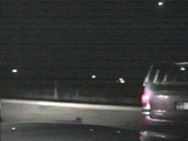

Le météore filmé par la caméra de la voiture de Rowlett

A Texas (Tennessee), un bolide est immortalisé par une caméra de
voiture de police américaine (dash camera). L'officier de police de Rowlett, dans la banlieue de
Dallas, est arrêté dans le trafic, lorsque la boule passe devant ses yeux.